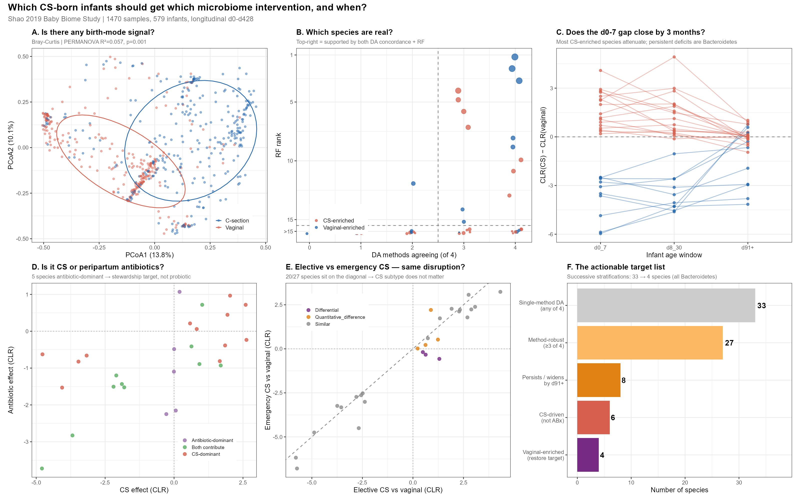
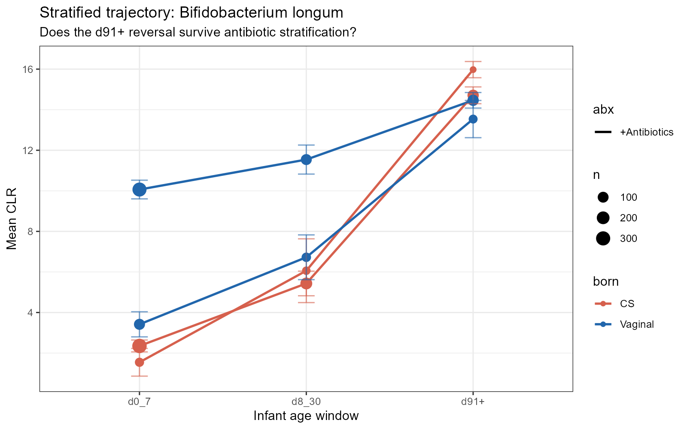
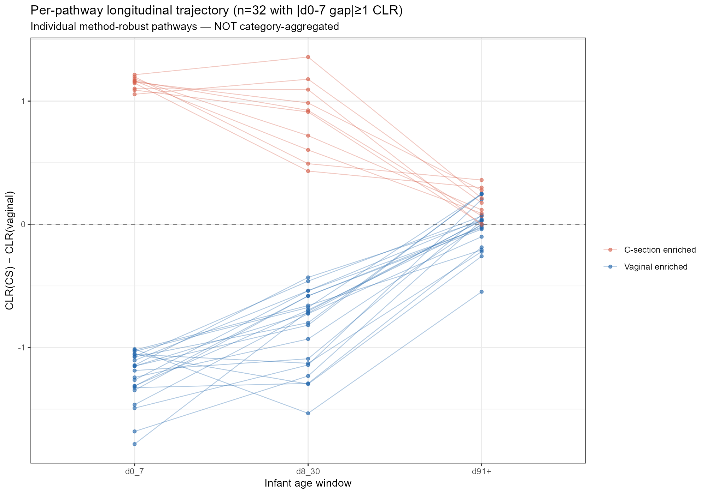

Robustness, persistence and intervention relevance of caesarean-birth microbiome signals
A stratified re-analysis of the Baby Biome Study (Shao et al., Nature 2019) — a longitudinal shotgun-metagenomic study of 596 UK newborns and their mothers
The question
Infants born by caesarean section (CS) are the target of a growing intervention landscape: mainstream Bifidobacterium probiotics (B. infantis EVC001, B. breve M-16V), vaginal seeding research, breastfeeding promotion, maternal faecal microbiota transplantation (FMT; Korpela 2020, Cell), synbiotic infant formulas (2025, EJCN), and next-generation Bacteroides probiotics (B. uniformis CECT 7771, B. fragilis SNBF-1).
Each of these is built on published CS-versus-vaginal microbiome differences. Those published differences come from different cohorts, different differential-abundance (DA) methods, different time windows, and inconsistent antibiotic stratification. Which of them are robust enough to design an intervention around is the question that concerns trial design and eventual clinical uptake.
Approach — why these four filters, and why these four methods
Why require agreement across four DA methods
Differential-abundance (DA) methods for microbiome data reach systematically different conclusions on the same input. Nearing et al. (Nat Commun 2022) benchmarked 14 DA methods across 38 datasets and found method choice was frequently the largest single source of disagreement in reported findings. Each method encodes specific assumptions — how to handle zeros, whether to model compositionality, whether to correct per-taxon sequencing bias, whether to include covariates. A finding that survives multiple mechanistically distinct methods is not an artefact of any one set of assumptions.
The four methods below were chosen because their assumptions do not overlap. Each row cites the methodology paper; the underlying model in each is different enough that agreement across all four constitutes independent statistical support.
| Method | Core model | What it catches / handles |
|---|---|---|
|
CLR + Wilcoxon Gloor et al. 2017, Front Microbiol |
Centered log-ratio transform (Aitchison compositional data framework), followed by rank-based two-sample test | Distribution-free baseline that treats compositionality directly; robust to non-normal count distributions but has no per-taxon bias correction |
|
ALDEx2 Fernandes et al. 2014, Microbiome |
Monte Carlo sampling from a Dirichlet posterior on each sample's composition, then t/Wilcoxon on the CLR-transformed instances | Propagates uncertainty from sequencing depth and zero-imputation into the significance test; important when many taxa have low or zero counts |
|
ANCOM-BC2 Lin & Peddada 2020, Nat Commun · Lin & Peddada 2024 |
Log-linear regression on log-transformed abundances, with per-taxon sampling-fraction bias correction (BC) and structural-zero handling | Corrects for the fact that different taxa have systematically different sequencing efficiency — a bias CLR-based methods leave in |
|
MaAsLin2 Mallick et al. 2021, PLOS Comp Biol |
Generalized linear/mixed model with configurable transforms (arcsine-sqrt, log) and multiple covariates | Only method here that natively adjusts for covariates (birth mode + antibiotics + gender in the adjusted run); tests both marginal and adjusted effects |
Metagenomic input was processed with MetaPhlAn3 / HUMAnN3 (Beghini et al. 2021, eLife) and accessed via curatedMetagenomicData (Pasolli et al. 2017, Nat Methods). Requiring ≥3-of-4 agreement filters 33 single-method species down to 27 method-robust species.
Why a longitudinal persistence filter
At day 0–7, many differences reflect the initial inoculum — vaginal microbes versus skin and hospital microbes — rather than a stable ecosystem. Interventions target long-term microbial composition, so interventions for CS-born infants have to address deficits that persist beyond the neonatal window. Filtering to differences that persist at three months (d91+) drops 19 species whose gaps naturally close and retains the eight where CS effects remain quantitatively meaningful.
Why deconvolve antibiotic exposure
Intrapartum antibiotic prophylaxis has its own effects on infant gut colonisation (Mazzola 2016, Stearns 2017, Aloisio 2021), overlapping the taxa affected by CS. Here the exposure runs against the usual direction — vaginal infants received antibiotics at 27%, CS at 12%, driven by intrapartum GBS prophylaxis. A 2×2 stratification (CS × antibiotics) at d0–7 assigns each species to CS-dominant, antibiotic-dominant, or both-contribute. Only CS-dominant signals belong in a CS-specific intervention argument.
Why a direction filter
For probiotic-style interventions, the target list is species we want to restore — vaginal-enriched taxa that CS infants lack. CS-enriched opportunists are a different intervention question (displacement or prevention, not restoration) and are handled separately. The final filter keeps only vaginal-enriched, restore-target candidates.
Analysis pipeline
The full flow from raw metagenomic profiles to the four-species, four-function target set. Numbers at right show how the species-level candidate list contracts at each filter stage.
The chain reduces 33 single-method species to 5. Applied at the pathway level, the same workflow reduces 223 method-robust MetaCyc pathways to 7 with substantial persistent magnitude.
What survives — a Bacteroidota-centred residual signal
Five species survive every filter: four Bacteroidota (B. uniformis, P. vulgatus, P. dorei, P. distasonis) and one Actinomycetota (C. aerofaciens). Their persistent deficits align with four persistent pathway-level deficits — GABA shunt, β-mannan degradation, glycogen degradation and urea-cycle-related capacity. Each pathway is a documented Bacteroidota activity, so the dominant residual signal at three months is Bacteroidota-centred — a specific gap with a specific mechanism, rather than a diffuse "dysbiosis". Replication in other cohorts and linkage to clinical outcomes are the next steps (see Future work).
| Persistent species (CLR gap at d91+) | Persistent function (CLR at d91+) | Mechanism citation |
|---|---|---|
| Bacteroides uniformis (−4.16) | GABA shunt (−0.52) | Bacteroides is the most prevalent gadB-bearing genus; B. uniformis is a documented GABA producer — gut-brain axis (Strandwitz 2019, Nat Microbiol; Belelli et al. 2025, Brain) |
| P. vulgatus, P. dorei, P. distasonis (−2.9 to −3.8) | β-mannan degradation (−0.55) | Bacteroidota type-9 secretion β-mannan utilization is a hallmark of the Bacteroidaceae-rich infant cluster (Hettle 2022, bioRxiv) |
| Bacteroidota (four species) | Glycogen degradation II (−0.49) | Bacteroides glycogen foraging (standard biology) |
| Bacteroidota (four species) | Urea cycle (−0.88, widening) | Bifidobacterium and Bacteroides recycle infant-gut nitrogen from milk urea (You et al. 2023, Gut Microbes) |


Does current intervention design match the residual gap?
With the residual set narrowed to five species (four Bacteroidota and one Actinomycetota) and four matching functions, each active class of intervention can be checked directly: does it deliver Bacteroidota, and does it act on the species that persist?
| Intervention class | Targets Bacteroidota? | Matches what survives? |
|---|---|---|
| Mainstream consumer probiotics B. longum, B. breve, B. infantis EVC001 |
No | Partial — the target species' CS deficits largely close by d91+; the case for these products rests on the acute 0–2 month window |
| Vaginal seeding research | Partially (mixed inoculum) | Partial — delivers Bacteroides among other taxa; establishment rate depends on inoculum dose and infant conditions |
| Maternal FMT (Korpela 2020, Cell) | Yes | Aligned — reports restoration of the persistent Bacteroides deficit |
| Synbiotic infant formula (2025, EJCN) | Yes (post-weaning) | Aligned — Parabacteroides recovery at 17 weeks, Bacteroides at 12 months in that trial |
| Next-generation single-strain probiotics B. uniformis CECT 7771, B. fragilis SNBF-1 |
Yes | Aligned in design — target the taxa that persist in this analysis; clinical outcomes still under investigation |
Reading the alignment
Interventions targeting Bacteroidota — maternal FMT, synbiotic infant formulas reporting Bacteroides recovery, next-generation Bacteroides single-strain probiotics — map onto the persistent deficit this analysis identifies. Mainstream Bifidobacterium probiotics target a real deficit too, but one that largely resolves within the first three months. Their case rests on the acute neonatal window (0–2 months): early colonisation, SCFA priming, opportunist competition. The long-term-restoration rationale that has often been used to justify Bifidobacterium probiotic supplementation in CS-born infants finds less support here.
Which alignment shows in other cohorts, and which target actually changes clinical outcomes, are questions for randomised trials.
Cohort caveats
Four properties of this dataset shape how the numbers above should be read.
- Intrapartum antibiotic exposure is inverted. Vaginal-born infants received antibiotics at 27%; CS-born at 12%. The driver is intrapartum GBS prophylaxis, given during vaginal labour. Any CS-vs-vaginal comparison that does not stratify picks up antibiotic effect running in the opposite direction to the default assumption in most published cohorts.
- E. coli is vaginal-enriched at d0–7 here. Enterobacteriaceae-associated functional pathways (enterobactin, aerobactin, LPS biosynthesis) inherit that direction. Most cohorts report the opposite — this is a cohort-specific property of BBS, not a sign convention.
-
feeding_practiceis 0% non-NA. Feeding × birth-mode interactions cannot be tested in this dataset. - Sampling gap between d31 and d90. The recovery transition is not directly observed. Data thin past d91+ preclude claims about 6–12 month trajectories.

Pathway-level view — do the persistent species deficits correspond to persistent functional deficits?
The species-level result leaves an obvious follow-up: do the persistent Bacteroidota species deficits show up as persistent metabolic capacity deficits, or do other genera pick up the same functions? The same four-filter workflow applied to 386 MetaCyc pathway abundances (HUMAnN3) answers directly.

What this project cannot answer
- Trajectories past d91+. Sample density falls off sharply after three months.
- Whether the persistent Bacteroidota gap translates to NEC, allergy, growth, or neurodevelopmental outcomes. BBS records no clinical endpoints; outcome-linked cohorts and intervention trials are required.
- Whether the pattern replicates across cohorts with different feeding practices, IAP rates, and geographies.
- Mother-infant strain-level transmission. Metadata are present (
family_role) but strain tracking was out of scope for this pass. - Causation. The intervention-alignment claims are grounded in evidence but remain hypotheses until intervention trials test them.
Future work
Six extensions, in order of tractability with public data.
- Cross-cohort replication. Apply the four-filter workflow unchanged to TEDDY, DIABIMMUNE, INSPIRE, and the 2025 Chinese synbiotic-formula trial cohort. Test whether Bacteroidota-centric convergence is BBS-specific or generalisable.
- Link the residual set to clinical outcomes. BBS carries no NEC, allergy, growth, or neurodevelopmental endpoints. CHILD, KOALA, MoBa, and TEDDY do. Ask directly whether infants with lower B. uniformis at three months are the ones developing atopic outcomes at two years.
-
Mother-infant strain-level transmission.
BBS metadata includes
family_role; mother samples are matched to infants. Strain tracking (StrainPhlAn, inStrain) can separate failed vertical transmission from failed establishment of transmitted strains — the first distinguishes whether maternal FMT (Korpela 2020) or exogenous strains is the more mechanistic intervention. - Direct test of the alignment hypothesis. Re-analyse recent probiotic and synbiotic RCTs with this workflow: does the intervention shift Bacteroidota into the vaginal-birth range, or does it lift Bifidobacterium without moving the persistent gap? A direct empirical check on the argument made here.
- Systematise the IAP asymmetry. The 27% vaginal / 12% CS split inverts the default assumption. A survey across UK, European, and US infant cohorts would show whether this reflects a BBS-specific screening rate or a broader re-evaluation of CS–IAP confounding.
- Package the funnel as an R workflow. Method concordance → longitudinal persistence → confounder deconvolution → direction filter, wrapped with a documented API. Applies to any binary-exposure microbiome question, not just birth mode.
Glossary
Terms and abbreviations used throughout, grouped by domain.
Clinical & obstetric
| CS (or caesarean-born) | Infant delivered by caesarean section — bypasses vaginal-canal microbe exposure and typically involves peripartum surgical antibiotic prophylaxis for the mother. |
| Vaginal (or vaginally born) | Infant delivered vaginally — is exposed to maternal vaginal, intestinal, and skin microbes during birth. |
| IAP | Intrapartum antibiotic prophylaxis — antibiotics (usually penicillin or ampicillin) given to the mother during labour, most commonly to prevent Group B streptococcal transmission to the newborn. |
| GBS | Group B Streptococcus — bacterial cause of early-onset neonatal sepsis; universal maternal screening and IAP is standard obstetric practice in many countries. |
| Elective CS / emergency CS | Scheduled CS (before labour onset) versus unscheduled CS (during or after labour has started). Differ in maternal stress, antibiotic timing, and infant microbe exposure. |
| NEC | Necrotising enterocolitis — severe inflammatory intestinal disease of preterm infants; part of the clinical motivation for caring about CS-associated microbiome disruption. |
| FMT | Faecal microbiota transplantation — transfer of a screened faecal microbial community to a recipient; in this context, maternal-to-infant to restore the missing vaginal-canal inoculum. |
| d0–7 · d8–30 · d91+ | Infant age windows used in the longitudinal analysis: days 0–7 (neonatal), days 8–30 (early infant), day 91 onwards (three months and beyond). |
Microbiome measurement
| Shotgun metagenomics | Sequencing all DNA fragments in a stool sample — captures both taxonomic composition and functional gene content, unlike 16S rRNA sequencing which reads only one marker gene. |
| MetaPhlAn3 | Software that maps shotgun reads against clade-specific marker genes to estimate the relative abundance of microbial species. Reference: Beghini 2021, eLife. |
| HUMAnN3 | Companion tool to MetaPhlAn3 that quantifies the abundance of microbial metabolic pathways per sample using the MetaCyc reference database. |
| MetaCyc | Curated database of experimentally elucidated metabolic pathways across all domains of life — the reference set that defines what "a pathway" means quantitatively in HUMAnN3 output. |
| curatedMetagenomicData | Bioconductor R package providing uniformly-processed MetaPhlAn3 / HUMAnN3 profiles for hundreds of published shotgun metagenomic studies, including the Baby Biome Study used here. |
| Relative abundance | Proportion of a sample's reads assigned to a given taxon or pathway — always sums to 1 within a sample (a "compositional" measurement). |
Statistics & methods
| DA (differential abundance) | Statistical test for whether the abundance of a specific taxon or pathway differs between two groups (here: CS versus vaginal infants). |
| CLR | Centered log-ratio transform — takes the log of each relative abundance divided by the geometric mean of the sample; the standard way to move compositional data into a space where ordinary statistical tests are valid. |
| CLR gap | Difference in mean CLR-transformed abundance between CS and vaginal groups. A gap of −2 CLR ≈ five-fold lower abundance in the CS group. |
| FDR | False discovery rate — the expected proportion of significant tests that are false positives (Benjamini-Hochberg correction is standard in microbiome DA). |
| Concordance / method-robust | A finding is "method-robust" (or "concordant") if it is significant under multiple statistical methods whose assumptions differ. Here defined as significant in ≥3 of 4 DA methods at FDR < 0.05. |
| Deconvolution / 2×2 stratification | Splitting the sample by two categorical factors simultaneously (here: birth mode × antibiotic exposure) to separate their individual effects on abundance. |
| PERMANOVA | Permutational multivariate analysis of variance — tests whether two groups of samples differ in overall community composition. |
| PCoA | Principal coordinates analysis — a low-dimensional projection of pairwise sample dissimilarities (Bray-Curtis here); the standard "beta-diversity plot" in microbiome studies. |
| RF | Random forest — an ensemble machine-learning classifier whose per-feature importance ranking provides an independent, distribution-free measure of signal strength; used here to triangulate with the DA methods (agreement between RF and DA is treated as convergent evidence). |
| GLM | Generalised linear model — regression framework accommodating non-normal outcomes (used by MaAsLin2 with covariates). |
| MC (Monte Carlo) | Statistical simulation from a probability distribution (used by ALDEx2 to sample sequencing-depth uncertainty from a Dirichlet posterior). |
Nutritional & functional
| HMO | Human milk oligosaccharide — a class of ~200 complex sugars in breast milk that human infants cannot digest but that specific gut bacteria (particularly Bifidobacterium infantis) can ferment. |
| SCFA | Short-chain fatty acid (acetate, propionate, butyrate) — end-products of bacterial fibre fermentation; critical for gut barrier integrity and immune signalling. |
| Bifidobacterium shunt | A characteristic metabolic pathway of the genus Bifidobacterium that ferments hexose sugars via fructose-6-phosphate phosphoketolase to acetate and lactate — the primary route for HMO utilisation in infant guts. |
| GABA shunt | Bacterial pathway that produces γ-aminobutyric acid (a neurotransmitter also active at bacterial-brain signalling) from glutamate. Bacteroides genera are the dominant gadB-bearing gut producers. |
| β-mannan degradation | Bacteroidota-signature carbohydrate utilisation pathway for plant and fungal mannan polysaccharides; requires the type-9 secretion system (T9SS) and is a marker of a mature Bacteroidota-rich infant gut. |
| Urea cycle | Nitrogen-recycling pathway. In the infant gut, urea from breast milk (~15% of milk nitrogen) is used by Bifidobacterium infantis and other commensals to build amino acids for the developing infant. |
Interventions
| Probiotic | Live microbial strain administered to confer a claimed health benefit. Mainstream infant probiotics use Bifidobacterium and Lactobacillus species. |
| Prebiotic | Non-digestible dietary substrate that selectively promotes beneficial bacteria (HMOs are the archetypal infant prebiotic). |
| Synbiotic | Combined probiotic + prebiotic formulation, given together for synergistic effect. |
| Next-generation probiotic | Live-biotherapeutic candidates from strain-specific research isolates — e.g. B. uniformis CECT 7771, B. fragilis SNBF-1 — targeting gut commensals absent from over-the-counter probiotic products. |
| Vaginal seeding | Investigational practice of swabbing a CS-born infant with maternal vaginal secretions post-birth to attempt to transfer vaginal microbes. |
| RCT | Randomised controlled trial — the standard evidence base for whether an intervention affects clinical outcomes. |
References
Numbered informally; full literature verification is documented in the project's internal audit trail.
Source cohort
Shao Y, Forster SC, Tsaliki E, et al. Stunted microbiota and opportunistic pathogen colonization in caesarean-section birth. Nature 574, 117–121 (2019). doi:10.1038/s41586-019-1560-1
Data & tooling
Beghini F, McIver LJ, Blanco-Míguez A, et al. Integrating taxonomic, functional, and strain-level profiling of diverse microbial communities with bioBakery 3 (MetaPhlAn3 / HUMAnN3). eLife 10, e65088 (2021). doi:10.7554/eLife.65088
Pasolli E, Schiffer L, Manghi P, et al. Accessible, curated metagenomic data through ExperimentHub (curatedMetagenomicData). Nat Methods 14, 1023–1024 (2017). doi:10.1038/nmeth.4468
Differential-abundance methods
Gloor GB, Macklaim JM, Pawlowsky-Glahn V, Egozcue JJ. Microbiome datasets are compositional: and this is not optional. Front Microbiol 8, 2224 (2017). doi:10.3389/fmicb.2017.02224
Fernandes AD, Reid JN, Macklaim JM, McMurrough TA, Edgell DR, Gloor GB. Unifying the analysis of high-throughput sequencing datasets: characterizing RNA-seq, 16S rRNA gene sequencing and selective growth experiments by compositional data analysis (ALDEx2). Microbiome 2, 15 (2014). doi:10.1186/2049-2618-2-15
Lin H, Peddada SD. Analysis of compositions of microbiomes with bias correction (ANCOM-BC). Nat Commun 11, 3514 (2020). doi:10.1038/s41467-020-17041-7
Lin H, Peddada SD. Multigroup analysis of compositions of microbiomes with covariate adjustments and repeated measures (ANCOM-BC2). Nat Methods 21, 83–91 (2024). doi:10.1038/s41592-023-02092-7
Mallick H, Rahnavard A, McIver LJ, et al. Multivariable association discovery in population-scale meta-omics studies (MaAsLin2). PLOS Comp Biol 17, e1009442 (2021). doi:10.1371/journal.pcbi.1009442
Nearing JT, Douglas GM, Hayes MG, et al. Microbiome differential abundance methods produce different results across 38 datasets. Nat Commun 13, 342 (2022). doi:10.1038/s41467-022-28034-z
Longitudinal CS microbiome trajectories
Bokulich NA, Chung J, Battaglia T, et al. Antibiotics, birth mode, and diet shape microbiome maturation during early life. Sci Transl Med 8, 343ra82 (2016). doi:10.1126/scitranslmed.aad7121
Korpela K, Helve O, Kolho KL, et al. Maternal fecal microbiota transplantation in cesarean-born infants rapidly restores normal gut microbial development. Cell 183, 324–334.e5 (2020). doi:10.1016/j.cell.2020.08.047
Reyman M, van Houten MA, van Baarle D, et al. Impact of delivery mode-associated gut microbiota dynamics on health in the first year of life. Nat Commun 10, 4997 (2019). doi:10.1038/s41467-019-13014-7
Intrapartum antibiotic prophylaxis and Bifidobacterium
Mazzola G, Murphy K, Ross RP, et al. Early gut microbiota perturbations following intrapartum antibiotic prophylaxis to prevent Group B streptococcal disease. PLoS One 11, e0157527 (2016). doi:10.1371/journal.pone.0157527
Stearns JC, Simioni J, Gunn E, et al. Intrapartum antibiotics for GBS prophylaxis alter colonization patterns in the early infant gut microbiome of low risk infants. Sci Rep 7, 16527 (2017). doi:10.1038/s41598-017-16606-9
Species → function mechanism citations
Strandwitz P, Kim KH, Terekhova D, et al. GABA-modulating bacteria of the human gut microbiota. Nat Microbiol 4, 396–403 (2019). doi:10.1038/s41564-018-0307-3
Belelli D, Lambert JJ, Wan M, Monteiro R, Nutt DJ, Swinny JD. From bugs to brain: unravelling the GABA signalling networks in the brain–gut–microbiome axis. Brain 148, 1479–1506 (2025). doi:10.1093/brain/awae413
Hettle AG, Vickers C, Robb CS, et al. The Type 9 Secretion System enables sharing of fungal mannan by human gut Bacteroides. bioRxiv 2022.07.15.500217 (2022). doi:10.1101/2022.07.15.500217
You X, Rani A, Özcan E, Lyu Y, Sela DA. Bifidobacterium longum subsp. infantis utilizes human milk urea to recycle nitrogen within the infant gut microbiome. Gut Microbes 15, 2192546 (2023). doi:10.1080/19490976.2023.2192546
Next-generation Bacteroides-targeted interventions
Gauffin Cano P, Santacruz A, Moya Á, Sanz Y. Bacteroides uniformis CECT 7771 ameliorates metabolic and immunological dysfunction in mice with high-fat-diet induced obesity. PLoS One 7, e41079 (2012). doi:10.1371/journal.pone.0041079
Fernández-Murga ML, Sanz Y. Safety assessment of Bacteroides uniformis CECT 7771 isolated from stools of healthy breast-fed infants. PLoS One 11, e0145503 (2016). doi:10.1371/journal.pone.0145503
Chen Y, Jiao T, Wang R, et al. Restoration of gut microbiota with a specific synbiotic-containing infant formula in healthy Chinese infants born by cesarean section. Eur J Clin Nutr (2025). doi:10.1038/s41430-025-01571-8
Acknowledgments
This project is a secondary analysis of publicly available shotgun
metagenomic profiles. The author gratefully acknowledges the mothers and
infants who consented to the Baby Biome Study, the Shao et al. team at
the Wellcome Sanger Institute and the Wellcome–MRC Institute of Metabolic
Science who conducted and released the cohort, the
curatedMetagenomicData maintainers (Pasolli et al.) for
providing uniformly-processed MetaPhlAn3 / HUMAnN3 profiles through
Bioconductor, and the methodology teams behind MetaPhlAn3 / HUMAnN3
(Segata group), ALDEx2 (Gloor group), ANCOM-BC2 (Peddada group) and
MaAsLin2 (Huttenhower group). No re-identifiable participant data are
included; all downstream results are group-level aggregates.
AI assistance
This project was author-directed and developed with AI assistance. Claude (Anthropic) was used for code drafting, exploratory literature lookup and technical writing. The research question, filter design, statistical validation, error verification and scientific interpretation were performed by the author. Numerical outputs were verified against source data files, and literature claims were checked against primary references before inclusion.